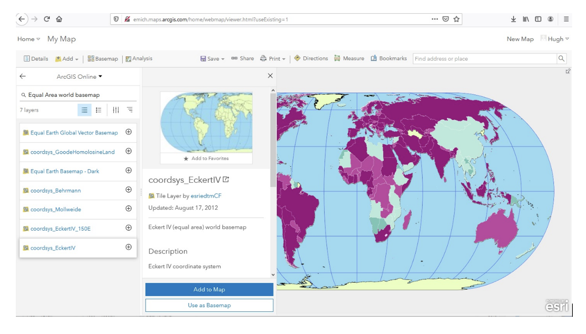

4. Map Projections
This tutorial introduces you to the basics of temporarily displaying map layers in different projections and coordinate systems using QGIS. This is also called changing the projections ‘on the fly’ and does not alter the underlying coordinates of the map layers.
The tutorial will also illustrate how to permanently change the underlying projection and coordinate systems of the map layers, and how to convert maps with different coordinates into a common coordinate system.
Finally, the tutorial will show how to change projections in ArcGIS Online. We will touch on projections for world maps, US maps, and maps of Michigan.
Data Requirements
Download the MapProj_QGIS.zip file from the Assignment Section on Canvas. Unzip it and save the files to a working directory on your computer.
4.1. Projections of the World
View the World in Geographic Coordinates or Plate-Carrée Projection
Open QGIS from the Start menu and create a new empty map document.
Click on Layer | Add Layer | Add Vector Layer and browse to the downloaded data folder.
Open the world subdirectory,. Select ESRI shapefiles as the file type to display, and load the .shp files into QGIS.
The layers should appear as shown below. The colors on the map will vary.
Study the shape and relative sizes of continents. Compare the size of Greenland with that of Africa and South America. Notice how small Greenland is on this projection. On some projections, you will notice major differences in the size of Greenland relative to Africa or South America.
Look at the different circles on the map (also called Tissot’s indicatrix after the French mathematician who devised them in 1859). Notice that close to the equator, the circles show little distortion, but as one moves north and south of the equator, the circles show increasing distortion. The circles give an indication of how much the shape of places are being distorted on the map as one goes north and south.
Examine the coordinates of the map. They are circled red on the map. (See illustration below). As you move the cursor over the map the coordinates change. These coordinates are latitude longitude. They range from 0 to 90 degrees north and south of the equator and 0 to 180 degrees east and west of the Prime Meridian, which is represented by zero degrees longitude.
At the bottom-right corner of QGIS you will see EPSG:4326. This is the code for the current CRS (Coordinate Referencing System) for the project.
In GIS, latitude longitude coordinates are also called Geographic Coordinates. This important to remember. When they appear on a physical three-dimensional globe, we also refer to the latitudes and longitudes as unprojected coordinates because the coordinates have not been projected to a flat plane.
On your map in QGIS, uncheck the latlong grid.
To determine the projection of your entire project, we can look at the project’s metadata. Click on Project and the top left of QGIS and select Properties.
On the dialog that appears, click on CRS (Coordinate Referencing System). The coordinate system information shows under Geometry and Coordinate Referencing System.
EPSG 4326 is the code for a widely used global spherical geographic coordinate system. It is based on the WGS84 datum and uses longitude and latitude in decimal degrees. For the most part, when you describe a long/lat coordinate location, those coordinates are based on the EPSG:4326 coordinate system.
There is no way to visualize the EPSG: 4326 coordinate system on a two-dimensional plane (map), so most software programs project these coordinates to an equirectangular projection named Plate-Carrée. The world map above is thus in the Plate-Carrée projection.
View the World Using Robinson’s Projection
The Plate Carrée is the basic projection for rendering world maps in geographic coordinates, but most of the time we want to work with other projections that better capture relative size and shape of places and distance and directions between them.
A popular projection for rendering the entire world to create thematic maps is the Robinson’s projection. If you do not know about the Robinson’s projection, you should do a quick review of the lecture notes. To render our world map in Robinson’s projection, do the following:
Click on Project and properties and the dialog below will appear. Enter Robinson next to Filter. Select either World Robinson or Sphere Robinson as the Coordinate System.
The map will change the arrangements of the angles of the coordinates relative to each other and consequently, the shape of the landmasses. The map will appear as shown below.
What do you notice about the distortion in the circles compared to the geographic coordinates? Are there more distortions, less distortion, or is the amount of distortion roughly similar?
The Robinson projection is a global map projection designed to present the whole earth with a minimum of distortion at any location, except for regions in the far north and far south.
The unit of measurement for projected are typically in feet or meters. That is because we are projecting the lat/long, which are in degrees, to a plane coordinate system, which are feet or meters.
If you look at the coordinates at the bottom of the map, you see that the map coordinates are now in meters.
Experiment with Other Global Projections
Using the methods described above, display the world using the following projections:
Winkel Tripel (World-Winkel_1 EPSG: 54018)
Mercator (WGS_1984_Web_Mercator_Auxiliary_Sphere)
Sinudoidal (World_Sinusoidal)
Arrange the projections in the layout as you did in the previous section, then submit a screenshot of your layout.
Write short statements on the characteristics of each projection and what mapping tasks each is best suited for.
Making a Single Layout of the Different Global Projections
Now, let us make a layout of the world in the different projections. First Reset your map to the EPSG: 4326 coordinate system then Click on Project | New Print Layout.
Give the new composer a name. When the canvas appears, Click on Add Items | Add Map.
Deliberately draw a small rectangle to hold the map so that map frames you create later will be able to fit besides it (See illustration below). Name the map “The World in Geographic or Unprojected Coordinates” or any suitable title.
Now, right click on the map, select copy and paste several copies on the map on the canvas, each to represent a different projection. We will change the projections from within this area.
Click on the second map to select it, then to the right next to CRS, select Robinson as the projection for this map.
Repeat the process and set projections for the other maps. The results should appear as shown below. Add scale bar, titles, etc, to your map.
Export your map for submission.
Answer the Qestions Below
How well is Antarctica represented on a Mercator Projection? What do you notice about the size of places as you go farther north and south?
How does the size of Alaska compare with the contiguous states?
Is a Mercator Projection great for making world thematic maps?
Which of the projections used above do you think is best for making a world thematic map to show Corona Virus mortality cases by countries? Give reasons for your choice.
4.2. Projections of the United States
Display the United States in the Geographic Coordinates
Similar to global datasets, when working with US map layers, it is important that you set the map projection based on the purpose of the map. In this section, we will focus on how to set map projections for US data.
In QGIS, click on Project | New and start a new project. Navigate to the US subdirectory in the dataset you downloaded and load the US Cities and USA layers.
Click on the Zoom In tool and zoom into the conterminous United States. If necessary, use the Pan tool to move the map to the center of the window.
Notice how wider the US map looks in geographic coordinates. Also, the 49th parallel along the US-Canada appears as a straight line. This effect occurs because, in unprojected coordinates, the meridians are drawn as parallel lines instead of converging lines. Drawing the meridians in this manner distorts the regions between them because as the poles are approached, the meridians are maintained as parallel lines, however. in reality they converge towards the poles.
As a general rule, you should avoid creating US maps using geographic coordinates.
The United States in Albers Equal Area Projection
The Albers Equal Area projection is a frequently used projection for US maps. This projection preserves the correct area of places, although it somewhat distorts the direction, distance and shape. To display a US map in geographic coordinates, do the following:
Click on Project | Properties and search USA_Contiguous_Albers_Equal_Area_Conic. Clcik Apply. The map should appear as shown below:
Compare the shape of the United States in geographic coordinates and in Albers projection. In Albers Equal-Area Projection, the meridians converge toward one another while the successive parallels remain parallel to one another. When you reach the North Pole, the meridians converge completely.
Notice also that in Albers projection, square boxes of latitude - longitude appear as elongated quadrilaterals with the bottom edges longer than their top edges. In geographic coordinates, the effect of the real convergence of the meridians is lost because the latitude and longitude grid form a set of perpendicular lines, which is what makes the United States seem wider and flatter in geographic coordinates.
Another popular projection used in the US is the Lambert Equal Area. You can search for USA_Contiguous_Lambert_Conformal_Conic. Display the map in this projection. It appears as shown below.
Now, set up layouts for the US projections.
In the next section, we look at projections for Michigan Layers.
4.3. Projections of Michigan
a. View of Michigan in Geographic Coordinates
In QGIS, click on Project | New and start a new project. Navigate to the Michigan subdirectory in the dataset you downloaded and load the Michigan and lat/long dataset.
Notice how unnatural, Michigan looks when displayed in geographic coordinates.
b. Display the Michigan Layer Using the Michigan GeoRef Coordinate Systems
In order to present a pleasing map of Michigan, and to minimize distortion of distance in statewide maps, we can use a state-wide coordinate system for Michigan called the Michigan GeoRef coordinate system to display Michigan layer. This coordinate system is based on a projection called the Hotine Oblique Mercator Azimuth projection.
To display a map of Michigan using the Michigan Georef Coordinate System, do the following:
Click on Project | Properties and search for NAD_1983_Michigan_GeoRef_Meters. Select this coordinate system and click OK.
In what way is this map different from Michigan in geographic coordinates?
Create single layout showing both Michigan in geographic coordinates and Michigan in the Michigan GeoRef projection. Submit the layout.
Summary of Deliverables
Create a Single Layout showing the world in the following coordinate systems or projections:
Geographic Coordinates
Robinson Projection
Winkel Tripel (NGS - world)
Mercator (world)
Sinudoidal (world)
Write short statements on the characteristics of each projection and what mapping tasks each is best suited for.
A layout showing the USA in Geographic Coordinates and Albers Equal Area Conic projection.
A layout showing both Michigan in geographic coordinates and Michigan in the Michigan GeoRef projection.
4.4. Transforming Map Projections
When you download map layers from different websites, there is a high likelihood that the map layers you download will be in different coordinates.
Map layers that have different coordinates will not overlay on top of each other. In order to make the maps overlay, you have to first define their projection tool, i.e., tell the software the name of the coordinate system of each of the map layer. Secondly, you have to transform the different coordinates into a common coordinate system.
In this section of the lab, we use QGIS software to practice converting map layers from one coordinate system to another. You are given six shapefiles pertaining to Washtenaw County. Three of the files are in Geographic Coordinates or latlong (WGS 84). They are:
Streets
School districts, and
Census tracts
The other three files are in Michigan GeoRef Coordinate System. The datum is NAD 83. They are:
Drinking water wells
Cities and
County boundaries
Your task is to change the coordinate systems of the map layers Michigan State Plane, South Zone, NAD 83 Feet), so that all the map layers can correctly overlay on each other.
Procedure
Click on Project | New and start a New Project.
Load the following layers into QGIS: Streets, Census Tract, and School Districts. All three of these layers have their coordinates in latitude / longitude or Geographic Coordinate System. The datum is WGS 84.
Let us check the Coordinate Reference System (CRS) of the street layer. Right click on the name of the streets layer, then select properties.
Under “Geometry and Coordinate System”, notice it says Invalid Projection. This means that the projection has not been set or defined. Close the dialog.
Prior to downloading the street layer, we were told that its coordinates were Geographic Coordinates, WGS 84. Recall that Geographic Coordinates is another name for latitude longitude. If you look at the bottom of the screen you can see the latitude longitude values. Although QGIS recognizes those values as latitude longitude, it does not know which datum the latitude longitudes are based on. Let us provide this information to QGIS by defining the coordinate system of the map of the layer. To do so, close the current dialog, then right click on the name of the street layer and select Set CRS | Set Layer CRS…
When the CRS Selector dialog appears, enter ‘WGS 84’ next to ‘Filter’ and search for this coordinate system. WGS 84 is the name of the datum. Select WGS 84 (EPSG: 4326) as the Coordinate Reference System for the new map layer. Click Ok.
When you click Ok, the software will update the shapefile’s .prj file by adding this projection information. For this particular projection, you won’t see any changes to the shape of the map.
Now, on your own, define the coordinate system for the two layers below as WGS 84:
School districts
Census tracts
Now add the other three files below. The coordinate system of these layers is Michigan GeoRef (NAD 83):
Wells
Cities
County boundary
The coordinate system of the last three files you added is Michigan Oblique Mercator. Since this is a projected coordinate system, it is not in latitude longitude. Thus, when you add the layers to QGIS, they may not display because the software can only display layers in one coordinate system at a time.
To better work with the last set of files you loaded, I suggest that you click on Project at the top left of the screen and select “New” to start a new project. Do not save the project. Re-add only the Wells, Cities, and Country Boundary layers. If you look at the coordinates at the bottom of the screen, you will see coordinates values in the Michigan Oblique Mercator Coordinate System.
Notice the question marks next to the layer names in the Table of Content? That means the coordinate system of the layers has not yet been defined or set as yet. To define the coordinate system of these layers in QGIS, right click on the name of the first layer and select Set CRS | Set Layer CRS… When the CRS Selector dialog appears, enter Michigan GeoRef into the filter and search for this coordinate system. Select NAD83/ Michigan Oblique Mercator as the projection for the layer. Click Ok.
Make sure that all the layers have been defined as NAD 83/ Michigan Oblique Mercator.
Convert All Map Layers to Michigan State Plane, NAD 83
Now that we have defined all the map layers based on their original coordinate system, we will convert all the map layers to a common coordinate system, i.e., Michigan State Plane, NAD 83 (feet).
Click on Project at the top left of the screen and select “New” to start a new project. Do not save the project. Add only the Wells, Cities, and County Boundary layers.
Right click on the first layer, e.g., Wells then select Export | Save Feature as..
Fill out the dialog that appears, fill it out as shown below, i.e., set a path and a name for the output file. Don’t just enter a file name, click on the triple dots icon and set the path. In the example below, I appended the word ‘projected’ to the original fine name.
For CRS, click on the globe icon and enter State Plane in the filter textbox. When the various options appear, select NAD 83, State Plane Michigan, South Zone, as shown below. Click Ok. This will save the layer with a new name and a new coordinate system.
Since you wish to convert all the layers to the Michigan State Plane Coordinate System, South Zone projection, repeat this process for all map layers.
The projected layers now appears in QGIS Table of Content. However, if you click on one of them, they may not draw. This is because the original layers in in different coordinate system compared to those that have been projected. I suggest you save and close the current project, then open a brand new project and display only the projected layers. If everything was done correctly, all the layers should overlay exactly on each other.
Convert the GCS Layers to Michigan State Plane, NAD 83
Click on Project at the top left of the screen and select “NEW” to start a new project. Do not save the project. Add only the streets, census tracts, and school district layers.
Repeat the process described above to convert these layers to Michigan State Plane, NAD 83.
Display all the Projected Layers 1. Click on Project at the top left of the screen and select “NEW” to start a new project. Do not save the project.
Add all six of the projected layers. If everything was done correctly, all the layers should overlay exactly on each other.
Use map design principles and create a map that shows all six of the layers at the same time. To accomplish this, for some of the layers, instead of using a “Fill” color which hides layers underneath, using just the outline of the features. For different layers, use different color outlines. Here is an example map that was previously submitted by a student.
4.5. Map Projections in ArcGIS Online
Increasingly, GIS professionals and businesses are using ArcGIS Online to share map files, so for correct depiction of size, shape, and directions of places relative to each other, it is important to be able to set projections correctly, particularly on maps that cover large areas.
By default, ArcGIS Online uses a projection called Web Mercator Auxiliary to display map layers. However, this projection distorts the size of places in the far north and south. See this link for a brief discussion. Making non-Web-Mercator maps is possible in ArcGIS Online. First, you have to search ArcGIS Online for basemap template in the desired projection of interests, then display the basemap projection, and then upload your maps into the projection. Here are the steps.
Download the Covid-19 Mortality by US states map we used in Lab 1.
Visit arcgisonline.com and sign in.
Click on Add | Search for Layers
Click on My Content | ArcGIS Online.
Search for “Albers Equal Area”. Select and load one of the Albers Equal Area Basemaps.
After loading the basemap, notice its shape. Observe how different it is from the Web Mercator Auxiliary projection shown above. I strongly suggest that you use this or similar projections for plotting US wide datasets.
If you are making global thematic maps, you can also search for something like “Equal Area Projections world basemaps” and you will be presented with different projection templates for the entire planet. Select and add them as basemaps and note the effect. You can even make your own projection. If you are sharing datasets such as global temperatures, atmospheric pressure, income levels, Covid-19 cases, etc using ArcGIS Online, these global projections are good choices for your maps.

Return to the Albers Equal Area USA projection and click on Add | Add Layers from file and load the USA Covid-19 Shapefile.
Using instructions from last last week’s lab plus your own fiddling, plot the Covid 19 mortality cases.
Deliverables
The projected maps as described in Section 1.
Answers to the questions in Section 1.
A professional quality map showing the six layers overlaid on each other.
The URL of your projected USA map in ArcGIS Online.
4.6. References
Working with Projections - Working with Projections